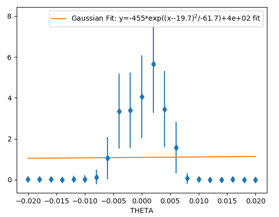
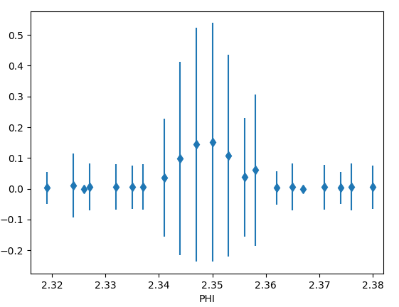

Testing
SetUp Simulated Device
There are some simulated device setups in the private share ...\Reflectometry\configs\<instrument>. To use these:
Copy galil directory to your configuration directory
Created a configuration with the correct number of simulated motors
some configs have components in that help with that. Your server may need a restart to pick them up after copying them over to your machine
Switch to config so that the motors are running
Run the
setup_motors.batin a epics terminal on your machineCopy the
config.pyto your refl directory in your config directoryRestart the refl ioc
This should make the instrument act like a simulated version of the chosen instrument.
If you want to swap between multiple configurations you can also create a package (includes __init__.py) for each instrument and then use the config.py in the base directory to swap between them.
CRISP in Feb 2019.
Setup
Scan in sample and align beam in SECI.
Copy scan.py from LOQ to CRISP to allow in IBEX plotting. Sort out a crisp package and alter the init so that it loads it.
Issue I can not see how to reload my changed code while developing my scan except to restart the scripting window (which is non-ideal).
Issue The fitting does not work at the moment so graphs will not display correct fits.
Issue The errors do not work correctly they are just square root of value
Ideally, this code should be in crisp_inst.py but I haven’t put it there yet this is to load in the scanning library:
from instrument.crisp.scans import scan
Theta scan
After the final align of the beam you should perform a theta scan to ensure that the beam is aligned.
scan("THETA", -0.05, 0.05, count=21, frames=100, fit=Gaussian)
which produces .
Sample alignment
After aligning with the laser:
Perform a shadow scan (this is only possible if your sample absorbs/scatters neutrons silicon does not). I could not do this with the sample I has.
Perform a shallow bounce scan. Set theta to a small angle (0.25) then tilt phi to find the peak in intensity. Start with reasonably wide slits otherwise you will not see anything. NB that the offset in CRISP defined in “Define offsets” is applied before sending it to the motor so when comparing to CRISP don’t forget to manipulate this correctly.
scan("PHI", 0.21, 0.285, count=21, frames=100, fit=Gaussian).
Move the table to be at the peak of this scan (this should be done by fitting)
Perform a sample height scan, this should peak at the height and be symmetric.
scan("HEIGHT", 0.22, 0.28, count=21, frames=200)Move the table to be at the height given by the peak in this scan
Now repeat until happy that the results are not changing.
Set the offset so that the user value is 0
Now perform a phi scan (on CRISP with the silicon block you don’t see anything)
Troubleshooting
Make sure the spectrum 1 look like Make sure the spectrum 2 look like Large spike at low time of flight is prompt spike it should not dominate spectra 1 or 3.
Do a theta scan without the sample or super mirror in the way. Does it look correct if not stop and think.
CRISP in March 2019.
Did many scans comparing SECI and IBEX see ISIS_Experiment_Controls\Reflectometry\Ticket3462.